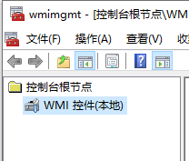
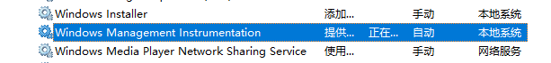
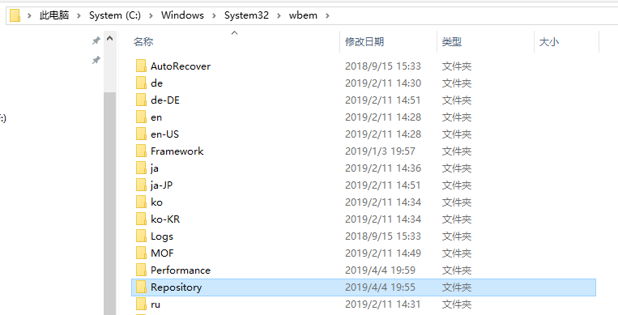

eDrawings无效类
启动程序时，弹窗提示无效类
问题
Application Exception 无效类。这里同c:\windows\system32\wbem\repository位置下的文件有关系。

方法1
实测正常。
1、从【开始/菜单-Windows系统工具-服务】打开服务界面，找到并停止服务“windows management instrumentation”,

2、开启：c:\windows\system32\wbem\repository ，将里面所有的档案备份后，删除，

3、在正常电脑找到步骤2文件夹的repository，在问题电脑进行替换
4、服务启动“windows management instrumentation”服务
5、重新开机 测试问题是否得到解决。

方法2
该类问题主要还是Windows® Management Instrumentation导致，如果以上方法都不行的话请再参考链接中的方法尝试修复： https://www.cnblogs.com/yinghualuowu/p/11002198.html
先看看WMI有没有问题。ctrl + R 运行 wmimgmt.msc，然后右键->属性
如下，说明WMI正常。那有问题的长什么样子？？不是下面的图片就是出问题了。比如出现xxxx the error “invalid class”（无效类）

首先cmd ，运行 net stop winmgmt
看命令也知道，这个是停止服务用的，它会停止一系列服务（其它一些服务可能依赖 WMI，也会提示会被停止）。万一WMI说它停不掉呢？去服务，直接停掉！（也许是先暂停再停止）
全部停掉之后，我们去C:\Windows\System32\wbem，把repository给重命名了。
重启~~~~~
再次运行 net stop winmgmt
最后运行 winmgmt /resetRepository
reset重置repository，搞定，再关机重启，多半就好了。
这么一大串。。一句话就是把Repository重置了。